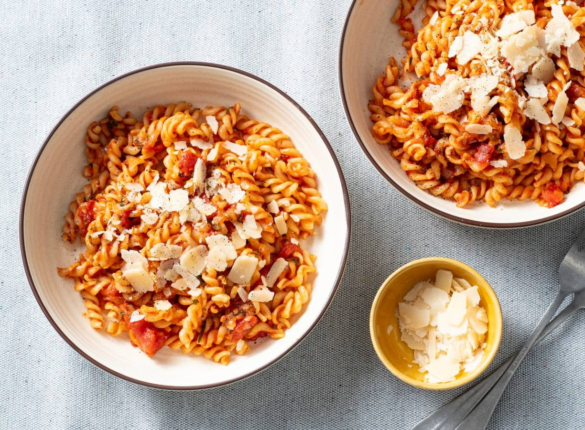
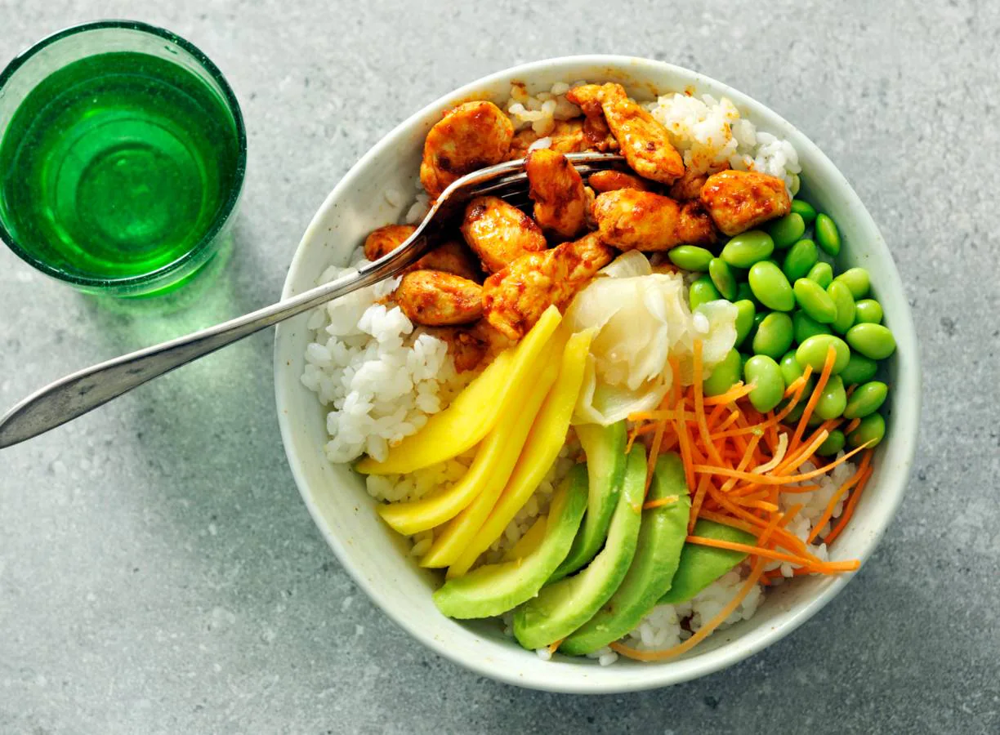
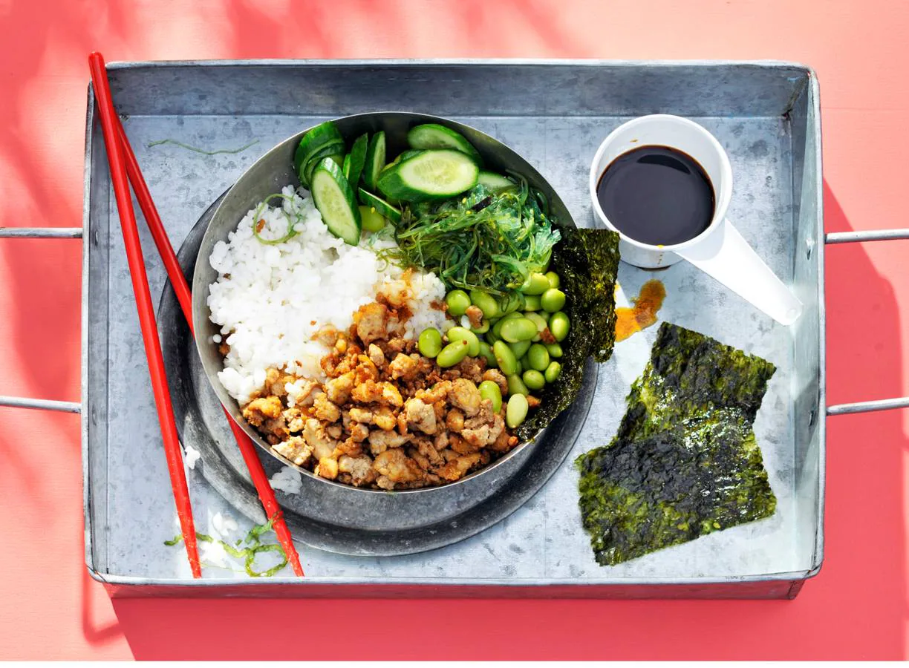
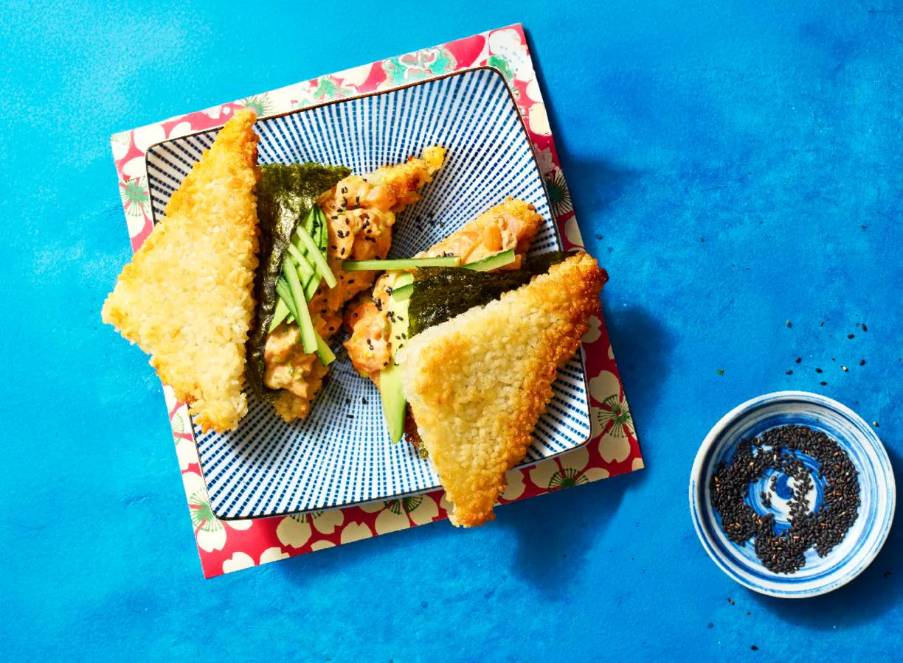
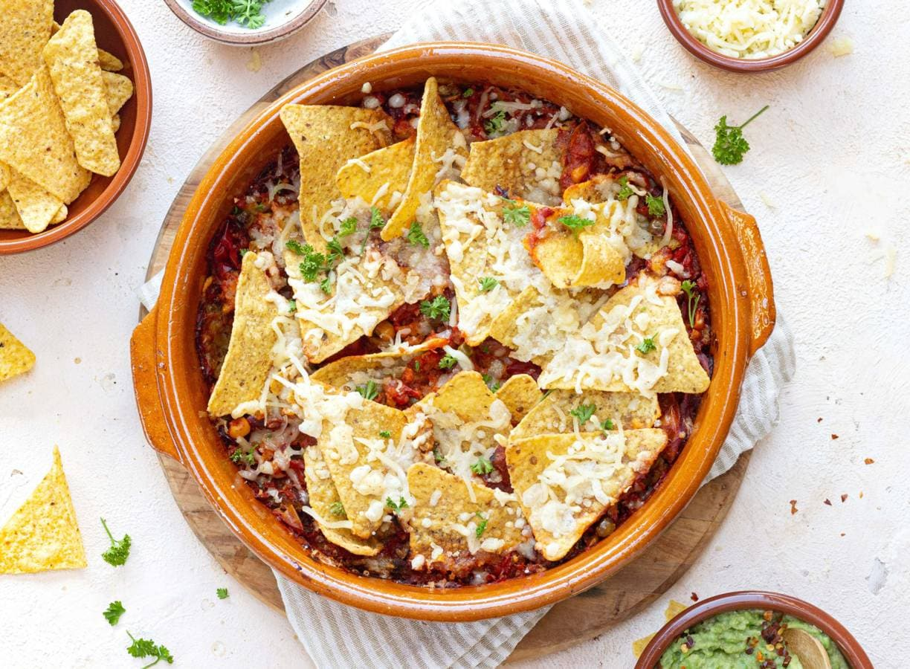
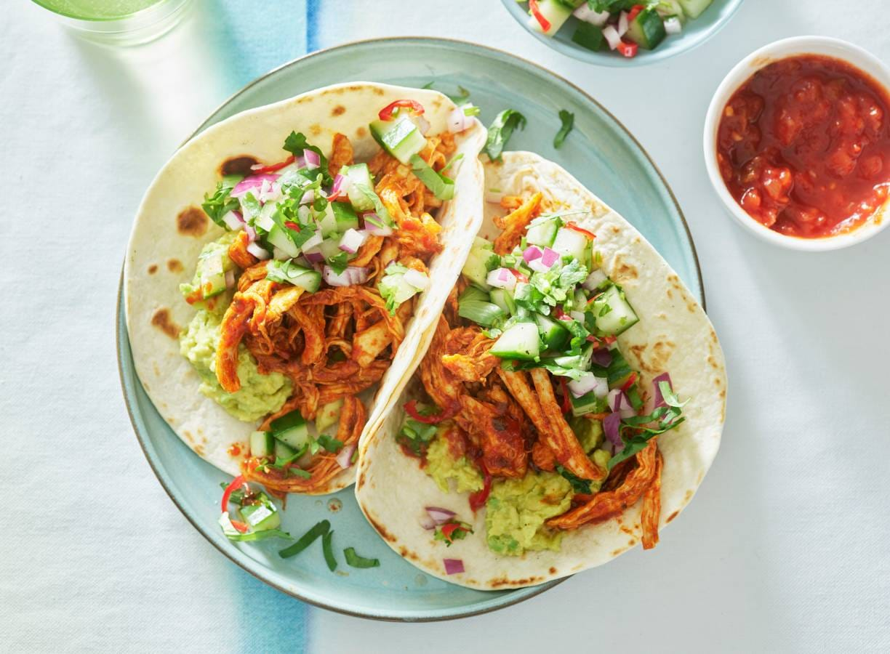
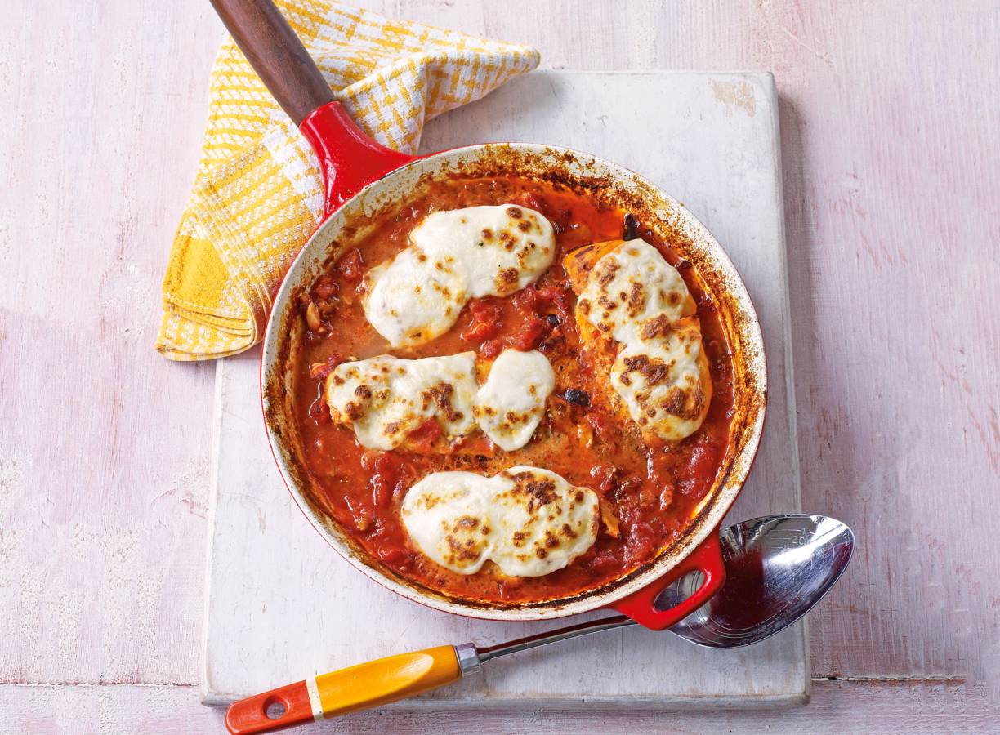

Pasta pesto

Kipburger
Fusili tomaat

Aziatische slawraps
Pokébowl kip

Pita gyros
Groene sushibowl

Karbonade met worteltjes

Spareribs met sla

California Roll

Orzo met Burrata

Donutburger

Pizza Prosciutto

Fakirs Vliegend Tapijt Pizza

Burritoschotel met Tomaten Komkommersalsa
Crispy Sushi Sandwich

Mexicaanse Burrito Bowl

Spaghetti Bolognese

Tosti Ovenschotel
Mexicaanse Nacho's

Lasagnette

Enchiladas met Spinazie
Pulled Chicken Taco's

Kipburger met Gebakken Aardappel

Iberico Ribs met Griekse Rub

Tomatensoep met Italiaanse Tosti
Kipfilet in Pizzasaus met Mozzarella

Broodje Kip Koolsalade

Kip Teriyaki met Paprika

Milanese Karbonade en Provençaalse Puree